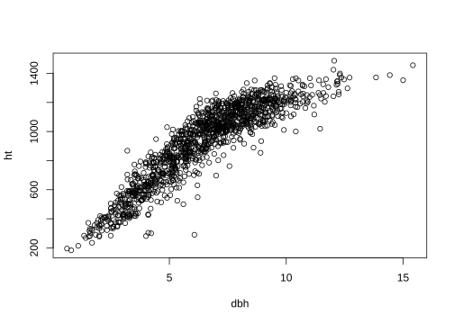
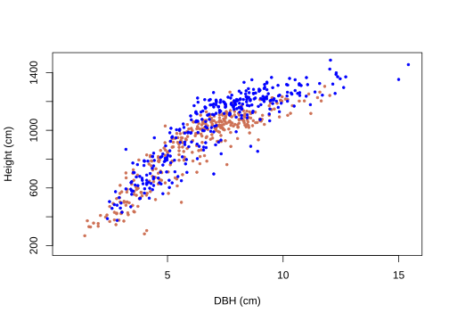
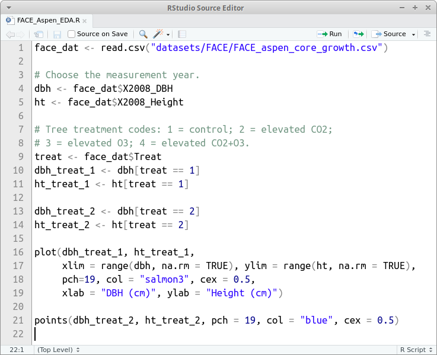
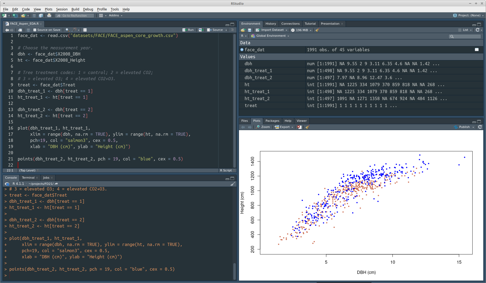
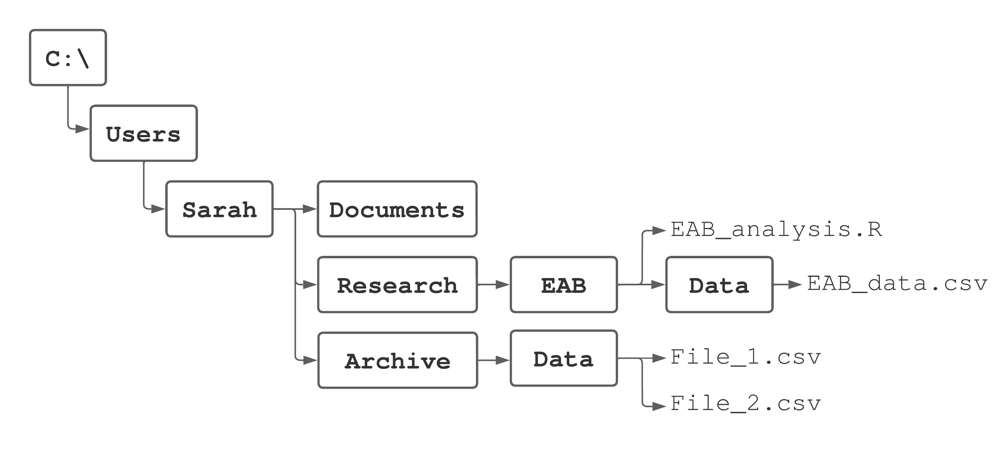
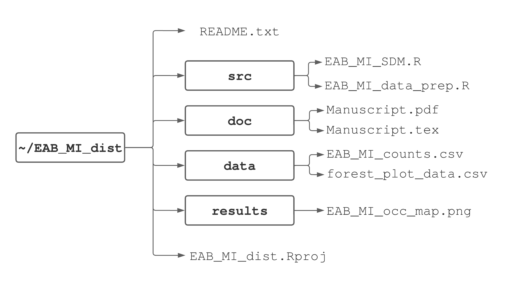

Chapter 3 Scripts and reproducible workflow
Data analysis, whether for a professional project or research, typically involves many steps and iterations. For example, creating a figure effective at communicating results can involve trying out several different graphical representations, and then tens if not hundreds of iterations to fine-tune the chosen representation. Each of these iterations might require several lines of code to create. Although we could accomplish this by typing and re-typing code lines in the console, it’s easier and more efficient to write the code in a script that we can submit to the console either a line at a time, several lines at a time, or all together.
In addition to making the workflow more efficient, scripts provide another great benefit. We often work on a project for a few hours, then move on to something else, and then return to the project a few days, months, or sometimes even years later. In such cases we might have forgotten how we created a particularly nice graphic or how to replicate an analysis, with the result being several hours or days of work to rewrite the necessary code. If we save a script file, the ingredients are immediately available when we return to a project.
Next consider a large scientific endeavor. Ideally a scientific study is reproducible, meaning an independent group of researchers (or the original researchers) are able to duplicate the study. Reproducible research means anyone can replicate the steps in a study, from importing external datasets and wrangling them into formats for analysis, to creating tables and figures using analysis results. In principle we could detail this process in a step-by-step guide using words; however, in practice, it’s typically difficult or impossible to reproduce a full data analysis based on a written explanation. It’s much more effective to maintain code that accomplishes all steps in a single script file with annotation included as comments.
In this chapter, we introduce scripts and their use to facilitate reproducible workflows. Because such workflows document analysis of datasets, we cover common functions for reading and writing external data. Writing high quality code and reproducible workflows means conforming to file naming, variable naming, code formatting, and file organization best practices. While many recommendations might initially seem tedious and unnecessary, we speak from experience that using scripts, staying organized, and using a reproducible workflow will save tremendous amounts of time and headaches in the long run.
3.1 Scripts
Scripts facilitate efficient coding and provide a data management and analysis record. We illustrate these ideas by tracing steps taken to develop a figure using the FACE dataset introduced in Section 1.2.3. The illustration uses features that we’ve not yet discussed, so don’t worry about the code details, rather focus on the script’s role in the workflow.
First read the FACE data using read.csv().
Let’s create a scatter plot of 2008 DBH versus height and explore the data a little bit along the way. To do this we create dbh and ht vectors using the 2008 DBH and height face_dat columns and print out the first ten values.
#> [1] NA 9.55 2.00 9.00 3.11 6.35 4.60 NA NA 1.42#> [1] NA 1225 334 1079 370 859 818 NA NA 268The missing values (denoted by NA) suggest several trees were dead or not measured for some reason in 2008. At some point it’d be good to investigate which trees have missing data and why, but we’ll skip that for now. plot()omits missing values.

Not surprisingly, the scatter plot shows DBH and height are positively correlated and their relationship is nonlinear. Now let’s modify the basic scatter plot by adding a feature to identify trees belonging to the control and elevated CO\(_2\) treatments. We do this by separating DBH and height into their respective treatment groups.
treat <- face_dat$Treat
dbh_treat_1 <- dbh[treat == 1] # Treatment 1 is the control.
ht_treat_1 <- ht[treat == 1]
dbh_treat_2 <- dbh[treat == 2] # Treatment 2 is the elevated CO2.
ht_treat_2 <- ht[treat == 2]To make a more informative scatter plot we’ll do two things. First, plot treatment 1 data, but ensure the plot region is large enough to show all the treatment 2 data. This is done by specifying sufficiently wide axis ranges via the xlim and ylim arguments in plot(). The xlim and ylim are set to the range of dbh and ht values, respectively, using the range() function.11 Second add treatment 2 data via points(). There are several other arguments passed to plot(), but don’t worry about these details for now.
We cover these and many other plot considerations in Chapter 9, where we’ll learn about a package called ggplot2 that provides another way to create such plots.
plot(dbh_treat_1, ht_treat_1, xlim = range(dbh, na.rm = TRUE),
ylim = range(ht, na.rm = TRUE), pch = 19, col = "salmon3",
cex = 0.5, xlab = "DBH (cm)", ylab = "Height (cm)")
points(dbh_treat_2, ht_treat_2, pch = 19, col = "blue", cex = 0.5)
We should have a plot legend to tell the viewer which colors are associated with the treatments, as well as many other aesthetic refinements. For now, however, we’ll resist such temptations.12
We only show some of the process leading to the completed plot above. We read in the data, created vectors of 2008 DBH and height measurements, took a look at a subset of measurement values, made an intermediate plot, partitioned the measurements by treatment, then made our final plot with points colored by treatment. However, we don’t show a lot of the process. For example, we made several mistakes while getting the code and plot the way we wanted it for this book, e.g., we initially forgot na.rm = TRUE in range() then fiddled around with the treatment colors, point symbols, and axis labels.
Now imagine trying to recreate the plot a few days later. Possibly someone saw the plot and commented that it’d be interesting to see similar plots for each year in the study period. If we did all the work, including all the false starts and refinements, it’d be hard to sort things out at the console. This would be especially true if a few months had passed, rather than just a few days. Creating the new plots would be much easier if we started from an existing script used to create our initial plot, especially if it included a few well-chosen comments to remind us what we were doing along the way.
Fortunately it’s easy to create and work with script files in RStudio. Just choose File > New File > R script and a script window will open in the upper left RStudio window. A script is simply a text file that contains code and ends with the file suffix .R. Efficient use of scripts is a key step toward creating a reproducible and organized workflow.

FIGURE 3.1: A script window in RStudio.
Figure 3.1 shows the script window containing our FACE plot code. From the script window you can, among other things, save the script using either the disk icon near the top left of the window or via File > Save, and run one or more lines of code using the Run icon in the window. By “run” we mean send code from your script to the console where it’s executed. You run one line of code by placing your cursor anywhere on the line you want to run, then pressing the Run icon. If you want to run several lines of code, highlight the desired lines then press the Run icon.13 You can press the Source icon to run the entire script. In addition, there’s a Source on Save checkbox. If this is checked, the entire script is run when the script file is saved (we rarely use this option). Generally, scripts are written incrementally—write a few lines then make sure they run as expected, then write a few more lines and check them, and so forth until the script is complete.
3.2 Best practices for naming and formatting
Although a bit harsh, Figure 3.2 points out that following code style guides, staying consistent with your chosen file and variable naming, and using ample comments will make your code accessible and reusable to you and others. The scripts you write for this book’s examples and exercises contribute to your codebase for future projects. A codebase is simply the collection of code used in analysis or software development. As your codebase grows, coding tasks become easier because you reuse code snippets and functions written for various previous tasks.

FIGURE 3.2: Randall Munroe’s xkcd.com take on code quality.
In subsequent sections, we detail a few key points from Hadley Wickham’s R style guide available at https://style.tidyverse.org, along with some others for maintaining high-quality code.
You can do your future self a favor and use clear and consistent naming conventions (or rules) for files, variables, and functions. There have been more times than we like to admit when we find ourselves searching through old directories trying to find a script that has code we could reuse for the task at hand. Or we spend too much time reading through a script that we or someone else wrote, trying to figure out what poorly named variables represent in the analysis. Using an acceptable naming rule is key to reducing confusion and saving time.
3.2.1 Script file naming
Script file names should be meaningful and end with a “.R” extension. They should also follow some basic naming rules. For example, say we’re conducting an analysis on the emerald ash borer (Agrilus planipennis), referred to by its acronym EAB, distribution in Michigan and save the code in a script. Consider these possible script file names:
- GOOD:
EAB_MI_dist.R(Naming rule called delimiter naming using an underscore. Here too we chose to capitalize acronyms.) - GOOD:
emeraldAshBorerMIDist.R(Naming rule called camelCase14 where the first letter in each word is capitalized, except perhaps for the first word. It’s called camelCase because the capital letters look like a camel’s hump.) - BAD:
insectDist.R(camelCase but the file name is too ambiguous.) - BAD:
insect.dist.R(Too ambiguous and multiple periods can confuse the operating system’s file type auto-detect.) - BAD:
emeraldashborermidist.R(Running the letters together without a delimiter or case change makes this too ambiguous and confusing.)
We’ll generally use the underscore delimiter and capitalize acronyms for script and data file names.
3.2.2 Variable naming
R has strict rules for naming variables. Syntactic names (i.e., valid names) consist of letters, digits, ., and _ but can’t begin with _ or a digit. Also, you can’t use any reserved words like NA, NULL, TRUE, FALSE, if, and function (see the complete list by running ?Reserved in your console). A name that doesn’t follow these rules is a non-syntactic name (i.e., invalid name) and will result in an error if you try using them. The code below attempts to use a non-syntactic name.
#> Error: <text>:1:2: unexpected symbol
#> 1: 1dbh
#> ^Although we don’t recommend it, you can override these rules by surrounding a non-syntactic name with backticks.
In addition to adhering to syntactic name rules, there is value in following a naming convention for variables. Here are some examples of good and bad choices for a fictitious variable that holds EAB counts used in the previous section’s EAB analysis:
- GOOD:
eab_count(Delimiter naming using an underscore. Here we chose to keep all letters lowercase, unlike the file example of this naming convention in the previous section.) - GOOD:
eab.count(Delimiter naming using a period and all lowercase.) - GOOD:
EABCount(CamelCase naming again.) - BAD:
eabcount(Running the letters together without a delimiter or case change makes this too ambiguous and confusing.)
3.2.3 Code formatting
Here are some other coding best practices that help readability:
- Keep code lines under 80 characters long. RStudio includes a vertical line in the script window at the 80th character to make this suggestion easy to follow.
- Allow some whitespace in a consistent way between code elements within lines. Include one space on either side of mathematical and logical operators. No space on either side of
:,::, and:::operators, which we’ll encounter later. Like the English language, always add a space after a comma and never before. In an expression, add a space before a left parenthesis and after the right parenthesis. Parentheses and square brackets can be directly adjacent to whatever they’re enclosing (unless the last character they enclose is a comma). There should be no space between a function name and left parenthesis that opens the function’s arguments. Notice how the use of whitespace rules below makes reading the code easier on the eyes:- GOOD:
d <- a + (b * sqrt(5 ^ 2)) / e[1:5, ] - BAD:
d<-a+(b*sqrt ( 5^2 ))/e[ 1 : 5 ,]
- GOOD:
- Avoid unnecessary parentheses; rather, rely on order of operations (yes, remember PEMDAS, see Section 10.2.2):
- GOOD:
(a + 4) / sqrt(a * b) - BAD:
((a) + (4)) / (sqrt((a) * (b)))
- GOOD:
- Indent code two spaces within functions, loops, and decision control structures (RStudio does this by default when you press the TAB key), we’ll revisit this point in Chapter 5 where these topics are introduced.
- Consolidate calls to packages (using
library()) at the top of the script rather than interspersing them throughout the script (Section 2.3).
3.2.4 Customize your coding environment
While this section has nothing to do with developing reproducible workflows, it has everything to do with being a happy coder. RStudio offers great flexibility to customize the interface such as changing themes and syntax highlighting. Syntax highlighting means different code features (e.g., function names, operators, variables, comments) are displayed using different colors and fonts within scripts. To change themes, go to Tools > Global Options and then click on Appearance and choose among Modern, Classic, and Sky. Here too, you can change the font and color schemes used for the script and other interface windows.

FIGURE 3.3: The RStudio IDE using the Modern theme and Material Editor theme.
We generally find Editor themes with a dark background and mellow colored syntax highlighting easier on the eyes and more helpful to quickly identify coding errors. For example, an RStudio window using the Modern theme and Material Editor theme is shown in Figure 3.3. Using a dark palette is especially useful during long work sessions.15
3.3 File paths and external data
3.3.1 Relative and absolute paths
Recall from Section 2.2, the working directory is the directory associated with each session from which R reads and writes files. You can change the working directory using methods discussed in Section 2.2, such as setwd().
Your working directory is shown at the top of the console window or by running getwd() in the console. For example, the working directory for the session shown in Figure 2.1 is ~/projects/FD20-book/FD20-git where the preceding tilde, i.e., ~, stands for the home directory. The home directory for Microsoft Windows is <drive>/Users/<username> where <drive> is the name of the drive, e.g., C: and <username> is your user name, for macOS it’s /Users/<username>, and for linux its /home/<username>. The root directory is <drive>/ on Windows and the first forward slash / for macOS and linux.
Say we want to read the FEF_trees.csv data file into R. As we’ll cover in Section 3.3.2, reading this file can be accomplished using read.csv(). The first argument in read.csv() is file which is set equal to the quoted path to the file you want to read. There are two types of paths, absolute and relative. An absolute path is the directory hierarchy starting from the root directory and ending with the data file. A relative path is the directory hierarchy starting from the working directory and ending with the data file, i.e., the data file location relative to the working directory. The code below reads the FEF_trees.csv file first using the absolute path, then using the relative path.
# Reading data using the absolute path.
read.csv(file = "/home/andy/projects/FD20-book/FD20-git/datasets/FEF_trees.csv")
# Reading data using the relative path.
setwd("/home/andy/projects/FD20-book/FD20-git")
# Or equivalently.
setwd("~/projects/FD20-book/FD20-git")
read.csv(file = "datasets/FEF_trees.csv")We do not recommend using absolute paths in your code. Using absolute paths makes fragile code, meaning it can “break” easily. Absolute paths in a script need to be changed every time the script is moved to a different directory or if someone tries to run your script on their computer. Rather, use relative paths that read and write data relative to the working directory. As illustrated in the previous example, from the working directory, your path can follow a directory hierarchy down into subdirectories, e.g., datasets. If you want to go up directory levels from the working directory use two periods (..), which takes you up one level (referred to as the parent directory). Continuing with the example code above and working directory setwd("/home/andy/projects/FD20-book/FD20-git"), read.csv(file = "../datasets/FEF_trees.csv") would attempt to read FEF_trees.csv from /home/andy/projects/FD20-book/datasets/FEF_trees.csv and read.csv(file = "../../datasets/FEF_trees.csv") would attempt to read FEF_trees.csv from /home/andy/projects/datasets/FEF_trees.csv. Both attempts would result in an error because there is no directory called datasets in the FD20-book or projects directories.
You will, at some point, try to read or write a file from a directory that doesn’t exist. When you do, R will provide a somewhat cryptic warning and error message. Following the example above, datasets/FEF_trees.csv does not exist in FD20-git’s parent directory, so the code below returns an error. When you see this error, there’s a very good chance the path you supplied to the read or write function is not correct.
#> Warning in file(file, "rt"): cannot open file
#> '../datasets/FEF_trees.csv': No such file or directory#> Error in file(file, "rt"): cannot open the connectionSetting and keeping track of a working directory might seem cumbersome. One way to make this a bit easier is to set the working directory at the top of your script using setwd(). While this is not a terrible idea (and one we often use), a potentially more eloquent approach is to use an RStudio project as we will see in Section 3.4.
3.3.2 External data
Data come in a dizzying variety of formats. Sometimes data are stored in proprietary formats used by commercial software such as Excel, SPSS, or SAS. Sometimes they are structured using a relational model, for example, the USDA Forest Service Forest Inventory and Analysis database (Burrill et al. 2018). Sometimes we use a data-interchange format such as JSON (JavaScript Object Notation; Pezoa et al. (2016)), or a markup language format such as XML (Extensible Markup Language; Bray et al. (2008)) perhaps with specialized standards for describing ecological information such as EML (Ecological Metadata Language; Jones et al. (2019)). The good news is we’ve yet to encounter a data format unreadable by R. This is thanks to the large community of package developers and data formats specific to their respective disciplines. For example, the foreign (R Core Team 2023) and haven (Wickham, Miller, and Smith 2023) packages provide functions for reading and writing data in common proprietary statistical software formats.
We cover a few popular base R functions for reading and writing plain-text rectangular files, often refereed to as flat files. For most applications we consider, a flat file is organized in rows and columns, with rows corresponding to observational units (things we measure, e.g., trees) and columns corresponding to variables recorded for each unit.
There are many functions in base R and user contributed packages that we do not cover (e.g., the load() and save() functions in base R for reading and writing R data files). Like everything else in this book, if the functions covered here don’t meet your needs then other options in R are only a Google search away.
Importing data
Fortunately many datasets are (or can be) saved as text files. Most software can read and write such files, so our initial focus is on reading and writing text files.
read.table() and its offshoots, such as read.csv(), are used to read 2-dimensional data (i.e., flat file) from a text file. For example, as described in Section 1.2.1, the FEF_trees.csv file holds biomass information for trees measured on FEF plots within different watersheds across years. Below are the first 7 rows and columns of the file’s 89 rows and 18 columns.
watershed,year,plot,species,dbh_in,height_ft,stem_green_kg
3,1991,29,Acer rubrum,6,48,92.2
3,1991,33,Acer rubrum,6.9,48,102.3
3,1991,35,Acer rubrum,6.4,48,124.4
3,1991,39,Acer rubrum,6.5,49,91.7
3,1991,44,Acer rubrum,7.2,51,186.2
3,1992,26,Acer rubrum,3.1,40,20.8As is evident, the file’s first row contains column names separated (delimited) by commas. Subsequent rows contain comma delimited data on each tree’s location (watershed code), measurement year, plot number, species, DBH, height, and weight of tree components (e.g., stem_green_kg is the green weight of the stem in kilograms).
read.table(), called in the code below, reads the FEF_trees.csv file and returns a data frame which is assigned to fef_trees. A data frame is a 2-dimensional object that holds data in rows and columns and is formally introduced in Section 4.5—for now picture a data frame as a spreadsheet or data table. We then use nrow() and ncol() to confirm R read in the correct number of data rows and columns.16 Lastly, we call head() to print the first six rows and columns, again to reassure ourselves the data were read correctly.
fef_trees <- read.table(file = "datasets/FEF_trees.csv",
header = TRUE, sep = ",")
# Confirm the correct number of rows and columns were read.
nrow(fef_trees)#> [1] 88#> [1] 18#> watershed year plot species dbh_in height_ft
#> 1 3 1991 29 Acer rubrum 6.0 48
#> 2 3 1991 33 Acer rubrum 6.9 48
#> 3 3 1991 35 Acer rubrum 6.4 48
#> 4 3 1991 39 Acer rubrum 6.5 49
#> 5 3 1991 44 Acer rubrum 7.2 51
#> 6 3 1992 26 Acer rubrum 3.1 40The read.table() arguments and associated values used above include:
fileidentifies the file location. In this case, the quoted pathdatasets/FEF_trees.csvis the relative path from the working directory toFEF_trees.csv(Section 3.3.1).header = TRUEspecifies the file’s first row contains the column names, known as the “header.”sep = ","defines the comma as the character delimiter between the file’s columns.
The function read.csv() is the same as read.table() except the default delimiter is a comma, whereas the default delimiter for read.table() is whitespace.
The file FEF_trees.tsv contains the same data, except columns are tab delimited. The sep argument’s value is the only change needed to read this file (and of course the file argument, because the data are stored in a different file).
fef_trees <- read.table(file = "datasets/FEF_trees.tsv",
header = TRUE, sep = "\t")
head(fef_trees, n = c(6, 6)) #> watershed year plot species dbh_in height_ft
#> 1 3 1991 29 Acer rubrum 6.0 48
#> 2 3 1991 33 Acer rubrum 6.9 48
#> 3 3 1991 35 Acer rubrum 6.4 48
#> 4 3 1991 39 Acer rubrum 6.5 49
#> 5 3 1991 44 Acer rubrum 7.2 51
#> 6 3 1992 26 Acer rubrum 3.1 40File extensions, e.g., .csv or .tsv, are naming conventions and serve only to remind us how the columns are delimited, i.e., they have no influence on read functions.
A third file, FEF_trees.txt, contains the same data, but with explanatory text added to the first several rows. The file also uses the whitespace delimiter rather than a comma or tab. Here are the first several rows of the file and seven columns of data.
This file includes felled tree biomass by tree component for hardwood
species sampled on the Fernow Experimental Forest (FEF), West Virginia.
A total of 88 trees were sampled from plots within two watersheds.
"watershed" "year" "plot" "species" "dbh_in" "height_ft" "stem_green_kg"
3 1991 29 "Acer rubrum" 6 48 92.2
3 1991 33 "Acer rubrum" 6.9 48 102.3
3 1991 35 "Acer rubrum" 6.4 48 124.4
3 1991 39 "Acer rubrum" 6.5 49 91.7
3 1991 44 "Acer rubrum" 7.2 51 186.2
3 1992 26 "Acer rubrum" 3.1 40 20.8Notice in this file, column names and character column values are quoted. This is necessary because character strings could include whitespace and hence the read function would assume it’s a column delimiter, e.g., the space between Acer and rubrum would be mistaken for a delimiter if it were not quoted.
read.table() needs to skip the first four rows above the header and know that whitespace is the delimiter. The skip and sep arguments control these behaviors.
fef_trees <- read.table(file = "datasets/FEF_trees.txt",
header = TRUE, skip = 4, sep = " ")
head(fef_trees, n = c(6, 6)) #> watershed year plot species dbh_in height_ft
#> 1 3 1991 29 Acer rubrum 6.0 48
#> 2 3 1991 33 Acer rubrum 6.9 48
#> 3 3 1991 35 Acer rubrum 6.4 48
#> 4 3 1991 39 Acer rubrum 6.5 49
#> 5 3 1991 44 Acer rubrum 7.2 51
#> 6 3 1992 26 Acer rubrum 3.1 40For fun, see what happens when the skip argument is left out of read.table() in the code above.
Importing data with missing observations
Missing data are common in environmental data. Sometimes missing data are just that—missing—the place where an entry should be is blank. Other times we represent missing data with numbers, such as -9999, or symbols. read.table() has an argument na.strings used to specify how the file represents missing data. The file FEF_trees_missing.csv contains the same FEF data, except some measurements in the third row are missing. Here are the file’s first seven rows and columns.
watershed,year,plot,species,dbh_in,height_ft,stem_green_kg
3,1991,29,Acer rubrum,6,48,92.2
3,1991,33,Acer rubrum,6.9,48,102.3
3,1991,35,Acer rubrum,,,
3,1991,39,Acer rubrum,6.5,49,91.7
3,1991,44,Acer rubrum,7.2,51,186.2
3,1992,26,Acer rubrum,3.1,40,20.8Notice in the third row of data, measurements for dbh_in, height_ft, and stem_green_kg are missing. Rather than being marked with an explicit symbol, e.g., NA which stands for not available or missing, the missing measurements were simply left blank. As shown in the code below, setting the na.strings argument equal to "" tells the read function that no values represent the missing values. We again print a subset of the resulting data frame to make sure the missing values were replaced with NA.
fef_trees <- read.csv(file = "datasets/FEF_trees_missing.csv",
header=TRUE, na.strings = "")
head(fef_trees, n = c(6, 6)) #> watershed year plot species dbh_in height_ft
#> 1 3 1991 29 Acer rubrum 6.0 48
#> 2 3 1991 33 Acer rubrum 6.9 48
#> 3 3 1991 35 Acer rubrum NA NA
#> 4 3 1991 39 Acer rubrum 6.5 49
#> 5 3 1991 44 Acer rubrum 7.2 51
#> 6 3 1992 26 Acer rubrum 3.1 40Take a look at the read.table() manual page to gain a better sense of how flexible this and related functions are at reading file formats.
Importing data with non-syntactic column names
When read by read.table() and related read functions, file column names that are not syntactic (see Section 3.2.2) are modified to make them syntactic (see ?make.names for the rules used to modify names).
Exporting data
Data files rarely come in an analysis-ready format. As further developed in Chapter 6, some level of data cleaning and data wrangling is typically needed prior to analysis. In addition to documenting such data preparation steps in a script, we often write the processed data to a file for further analysis, distribution, or archival on a data repository. write.table() writes data frames and data frame like objects to an external file.
To illustrate write.table(), the code below creates a new csv file in our current working directory named FEF_trees_new.csv from the fef_trees data frame we previously created.
Let’s walk through the write.table() function arguments and associated values used in the code above:
x = fef_treesis the object we’ll write to a file, in this casefef_trees.file = "FEF_trees_new.csv"is the file path and name to store the data specified in argumentx. This is a relative path, unless a root directory is included in the path. See Section 3.3.1 for more on relative and absolute paths.sep = ","defines the comma as the character delimiter between the file’s columns.row.names = FALSEindicates row names will not be included as the first column in the file. This argument is by defaultrow.names = TRUE. We prefer not including the row names.
write.csv() is a version of write.table() to simplify writing comma delimited files.
3.3.3 Illustration
Let’s review some key ideas from Sections 3.3.1 and 3.3.2 using an example. Say Sarah is analyzing some emerald ash borer data. Figure 3.4 illustrates her computer’s directory structure, which is running Microsoft Windows operating system. Her home directory C:/Users/Sarah contains three directories Documents, Research, and Archive. To stay organized, she created a dedicated directory called EAB within Research where she keeps the analysis script and data. You’ll also notice, keeping with good file naming practices, she uses an underscore delimiter naming rule for her files, see, e.g., Section 3.2.1.

FIGURE 3.4: A directory structure used for illustration.
Code in the EAB_analysis.R script performs the analysis of data held in EAB_data.csv. We display the first two lines in this script below. The first line sets EAB as the working directory using its absolute path. Equivalently, she could have used setwd(~/Research/EAB) to set the working directory, because ~ is short for her home directory path C:/Users/Sarah. In fact, in most cases it’s much easier to use the tilde in place of writing out the path from the root directory to the user’s home directory. The next line of code reads the EAB_data.csv data file using the file’s relative path from the EAB working directory. If the working directory was not set or set to some directory other than EAB, then read.csv(file = "Data/EAB_data.csv") would fail.
setwd("C:/Users/Sarah/Research/EAB")
# Or, equivalently, setwd("~/Research/EAB")
eab_dat <- read.csv(file = "Data/EAB_data.csv")Say later down in the script she needs to read File_1.csv from the Archive/Data directory. Given the EAB working directory, this file is read using the code below. Notice the use of ../.. to go up two directories to Sarah before going down into Archive.
3.4 RStudio projects and keeping organized
When working on a project, it’s generally best to keep associated files in an organized directory structure. Such a structure might comprise a main directory that contains subdirectories to hold data, scripts, metadata, and results, see, e.g., Section 3.4.1. If organized in this way, the main directory would likely serve well as the working directory. Each time you start an R session to work on the project, you need to set the working directory using setwd() or one of the methods covered in Section 2.2. To eliminate the repetitive task of setting the working directory for each session, RStudio offers the projects feature.
We’ll illustrate this feature by making an RStudio project you might use for working through this book’s examples and exercises. In RStudio go to File > New Project then select New Directory > New Project. RStudio then asks for the directory name and its location. Let’s call the project IFDAR (the acronym for the book’s title) and choose a location that makes sense in your broader directory structure, then click Create Project. When these steps are complete, a new RStudio session will start and you should see the project name tab (IFDAR) in the top right corner of the RStudio window. Clicking on the project name provides a menu with options to switch between projects, create a project, and control projects’ default behavior.
By placing the book’s datasets directory into your IFDAR project directory, code examples offered in the book should run without modifying the relative paths to the various illustrative datasets.17
The primary benefit of an RStudio project is that we only need to specify the working directory once when setting up the project. In other words, whenever you open an RStudio project the working directory is automatically set. You can confirm this by looking at the top of the console window after creating the IFDAR project, where you should see the working directory’s absolute path. Each project is also associated with its own history, which can be useful if you ever forget to save some important code in a script. Working directory, history, and other project information is stored in a .Rproj file (e.g., IFDAR.Rproj), which can be opened from within RStudio File > Open Project or used to open the project directly from your operating system’s file browser. By automatically setting the working directory, RStudio projects allow for better organization, fewer file relative path errors, and improved reproducibility.
3.4.1 Directory structure
Whether you decide to use RStudio projects or not, establishing an organized directory structure around your working directory is key to efficiency and reproducibility. There is no single correct way to structure directories. As you learn R and become more familiar with data analysis, you’ll build a preference for subdirectory and file organization. To get you started, we’ll outline an organization scheme that promotes reproducible research best practices suggested by Sandve et al. (2013) and Wilson et al. (2017). This scheme is illustrated in Figure 3.5 for an example project that aims to model emerald ash borer distribution in Michigan.

FIGURE 3.5: One suggested way to organize a project’s directories and files.
In the main project directory we suggest having two files and four subdirectories. The first is the RStudio project file, e.g., EAB_MI_dist.Rproj. The second is called a README file, typically a simple text file named README.txt, that provides a project description and subdirectory content list with a brief description of each file’s purpose. We recommend starting each project with a README.txt file and adding information to it as the project progresses18. A README file not only helps you keep track of file organization, but is crucial for effective collaboration, reproducibility, and archiving.
The four subdirectories are called data, results, doc, and src. The data directory contains raw data and metadata used in the analysis. Depending on the data amount and structure, you might have multiple subdirectories within the data directory.
In Figure 3.5, the data directory holds two files used in the analysis, one containing EAB counts across Michigan (EAB_MI_counts.csv) and the other containing forest plot characteristics (forest_plot_data.csv). The results directory should contain any files generated during the analysis, which might include figures (Chapter 9), tables (Chapter 14, and archive-ready cleaned and tidy datasets (Chapter 8). For large projects, it’s often useful to have a separate subdirectory inside the results directory called figures where final figures are stored. The doc directory contains documents associated with the project. Depending on project objectives this can include files for manuscripts, notes, lectures, or professional reports (Chapter 14). The doc directory contains files used to write a manuscript in LaTeX (Section ??). Lastly, the src directory (short for “source code”) contains all code written for the project, e.g., EAB_MI_data_prep.R to prepare the data for analysis conducted in EAB_MI_SDM.R.
While this suggested directory structure is quite specific, the important thing is that you follow a systematic and intuitive directory and file naming scheme that works best for you and allows others to reproduce your work with minimal effort.
3.5 Summary
In forestry, ecology, and the environmental sciences there’s a push for open science, reproducibility, and transparency (Ellison 2010), as evidenced by the increasing number of academic journals and government agencies requiring all data and code to be published along with final manuscripts and reports. Considering the scientific process more broadly, the goal of any scientific endeavor is to build upon previous knowledge. By using reproducible data analysis tools that make it easier for others (and your future self) to extend your work, you’re doing your part to advance forestry and environmental sciences.
In this chapter we introduced essential rules and tools to establish an organized and reproducible data analysis workflow. Maintaining organization throughout all aspects of an analysis can improve efficiency, reduce avoidable errors, and make troubleshooting problems much easier. An organized workflow is also essential for reproducible work.
Perhaps the easiest way to start documenting your workflow is to use scripts. Scripts are simply text files with a .R extension that hold code needed to reproduce steps in an analysis. The script window in RStudio allows you to write and run your code incrementally, save it, and easily return to it at some later point in time. Adding comments throughout your scripts is an efficient and convenient way to document your analysis and coding decisions. In Chapter 14, we’ll learn about R Markdown and Quarto, an alternative way to save and document code that’s ideal for collaboration and making visually-appealing reports.
The scripts you write to reproduce examples and complete exercises in this book can form the codebase from which you borrow code snippets for future work. Key to building a valuable codebase is to follow best practices when formatting code, naming variables and files, and keeping work in organized directory structures.
Maintaining an organized and intuitive directory structure, as well as using good coding practices and file naming conventions are often overlooked as a crucial part of data analysis and scientific research (Wilson et al. 2017). Learning efficient coding, file organization, and data analysis techniques is analogous to learning proper field techniques for performing a timber inventory, regeneration survey, or any sort of ecological field work. Initially, it might seem tedious to pay attention to organizational and logistical details, but in the long run, using such techniques (or using efficient and accurate field techniques) leads to more reliable results and saves time and headaches.
We also covered some file reading and writing basics. These routine tasks, dependent on file and directory structure, are part of nearly every data analysis. We read and write external files using either their absolute or relative path. The absolute path starts from the root directory. The relative path starts from the session’s working directory, which is set at the beginning of each new session. RStudio projects remove the need to set a working directory for each new session and also provide some organization and session history niceties. A key skill moving forward is the ability to navigate your computer’s directory structure relative to your chosen working directory or RStudio project.
In Chapter 4, we will continue to introduce fundamental skills needed to work with data in R. With the basics of reproducible workflows established in this chapter, we will move our discussion to tools in R used to organize, represent, access, and manipulate data.
3.6 Exercises
Exercise 3.1 Use Figure 3.4 to answer the following questions.
What is the root directory?
What is the home directory?
What is the absolute path to the working directory set using
setwd("~")?What is the absolute path to
File_2.csv?What is the relative path to
File_2.csvif the working directory was set usingsetwd("~/Research/EAB/Data")?Say
setwd("~/Research/EAB")was used to set the working directory. Then, within RStudio, a new script file namedEAB_spatial_analysis.Rwas created usingFile > New File > R Script. Where is this new script file saved by default?
Exercise 3.2 Consider your own computer when answering the following questions.
What operating system are you using, e.g., Microsoft Windows, macOS, Linux, Unix?
What is your root directory?
What is the absolute path to your home directory?
Where will you keep work associated with this book?
References
Try and figure out what the
na.rmargument does inrange(). Read aboutrange()by typing?rangein the console. Then, create a short vector with a mix of numeric andNAvalues and pass it to therange()function withna.rm = TRUEthen withna.rm = FALSE. As recommended in Section 1.3, it’s these explorations that build your skills.↩︎As an aside, by only looking at the plotted data and thinking about basic plant physiology, can you guess which color is associated with the elevated CO\(_2\) treatment?↩︎
Alternatively, you can use a keyboard shortcut to run code and perform other tasks in RStudio. See
Help > Keyboard Shortcuts Help.↩︎Search “Customizing RStudio” and “Using RStudio Themes” on the Posit website if you’re interested in creating custom themes and syntax highlighting.↩︎
You could instead use
dim(), i.e.,dim(fef_trees), which returns a vector of length two with the first and second elements corresponding to number of rows and columns, respectively.↩︎Available at the book’s website PROVIDE THE URL TO BE DETERMINED.↩︎
The README file could also be a markdown (.md) or Quarto (.qmd) file. See Chapter 14.↩︎